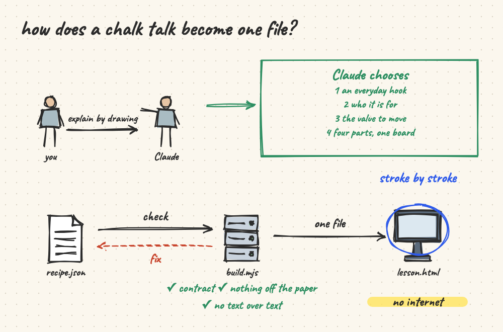
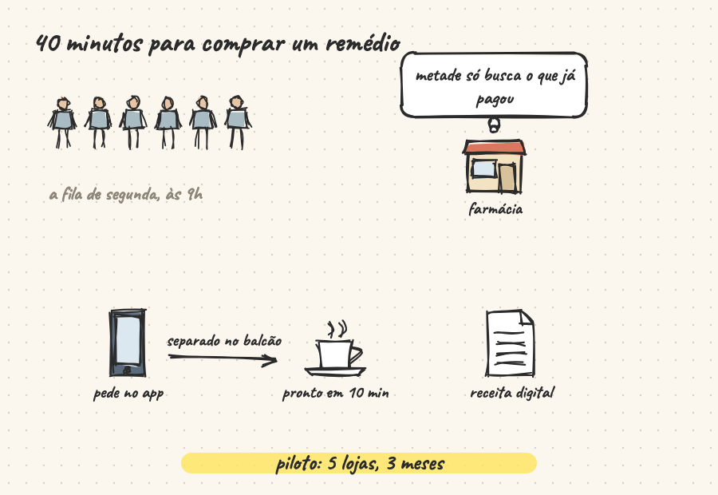
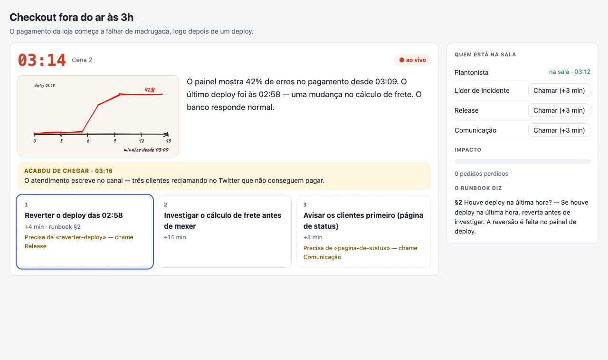
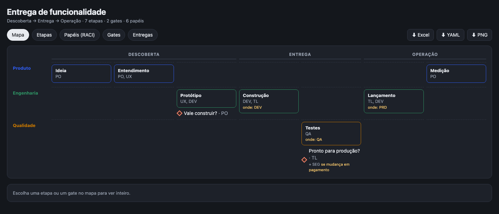
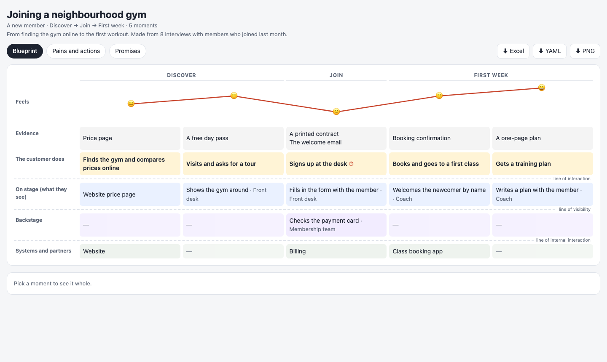

house-lights
The lights that come up so everyone can see. Six skills for Claude that show an idea to people — by drawing it, playing it, mapping it or comparing it — each one an HTML file that opens offline.

Teach an idea by drawing it A hand-drawn lesson that appears stroke by stroke, chapter by chapter, with narration and values you can move.
Present it on a napkin A pitch, an architecture, a decision, data, a timeline or a story, drawn to be shown — it opens presenting, and becomes a PowerPoint.
Rehearse the incident A runbook becomes a drill to play, with a clock and choices, and a debrief of what the runbook does not say.
Map how the team works Stages, gates and who approves them, roles and outputs: one checkable file, a map, a workbook and a lesson.
Map what the customer lives Each moment of a journey, how it feels, and who makes it happen on stage, backstage and in the systems. Compare the agents
Copilot Studio agents side by side: what repeats, who is off the pattern, what the orchestrator passes on, which events fire, what nobody uses — with the file behind each.
Compare the agents
Copilot Studio agents side by side: what repeats, who is off the pattern, what the orchestrator passes on, which events fire, what nobody uses — with the file behind each.
Install
In Claude Code, all six at once:
/plugin marketplace add ruinosus/house-lights /plugin install house-lights@house-lights
In claude.ai, upload each skill's zip from the latest release (Settings › Capabilities › Skills, code execution on). In VS Code with GitHub Copilot: Chat: Add Plugin Marketplace › ruinosus/house-lights, then install it from Agent Customizations › Browse. Outside both: npx house-lights <skill> <file>.